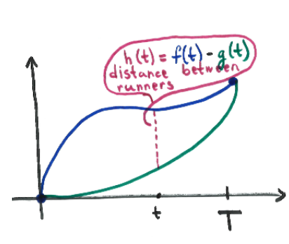

Let \(f(t)\) be the position of the first runner at time \(t\), and let \(g(t)\) be the
position of the second runner at time \(t\). Let \(T\) denote the time that the two
runners finish the race (which is the same, since they finish in a tie). Also, let \(h(t) = f(t) - g(t)\).
Since \(h(0) = 0\) and \(h(T) = 0\), by Rolle’s Theorem there exists some \(c\) with \(0 < c < T\) such that \(h'(c)=0\). But
since \(h^\prime (t) = f^\prime (t) - g^\prime (t)\), we have that \(f^\prime (c) = g^\prime (c)\). Therefore, the runners have the same speed at time
\(c\).
